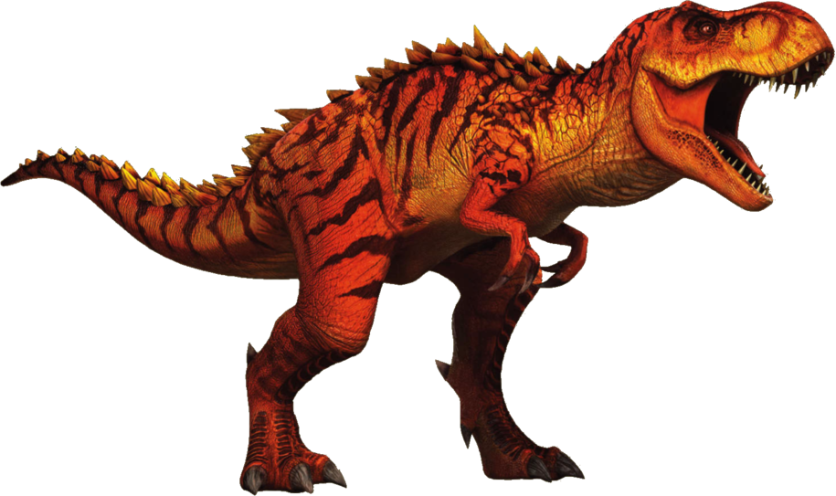

Una especie facinante
Su desaparición marca el límite entre la era mesozoica y la cenozoica, y el comienzo de la denominada edad de los mamíferosLos dinosaurios fueron un grupo de reptiles que habitaron la Tierra en la era mesozoica , desde el período triásico superior hasta fines del cretácico (245 a 65 millones de años atrás).
Una especie omnívoro y se alimentaba de pequeños animales, insectos, huevos y plantas. Se trataba de un dinosaurio bastante ágil que caminaba a dos patas que eran bastante delgadas
